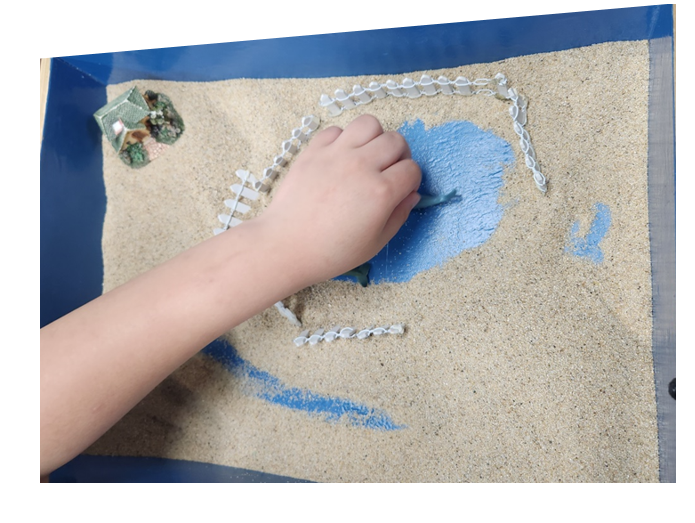

1. 대상관계의 개념
1) 대상관계
대상관계(object relation)란 영아이 때 자신을 돌봐주는 양육자에 대한 이미지에서 비롯되는 것으로 발달하면서 개인적인 경험이 축적 됨에 따라 변하게 된다. 대상관계는 사물보다는 사람과의 관계에 초점을 두기 때문에 대상관계는 인격적 관계라는 개념을 지닌다. 즉, 다른 사람과의 관계는 아이가 자신의 생리적 욕구를 충족시켜 주는 엄마와의 관계에서 처음으로 생긴다. 개인이 대상과의 관계를 통해 자아 개념을 형성하고, 이러한 관계 패턴이 나중의 인간관계에 영향을 미친다고 보고 있다.
인생초기의 가족관계에서 형성된 대상에 대한 이미지는 아이의 마음속에 내재화 되어 타인과의 대인관계 영역에서 다시 나타난다. 내재화된 대상은 아이가 주관적인 지각과 환상에 근거해서 발달과정 중에 형성되며 이렇게 이루어진 대상이 다시 지각, 사고， 환상 및 현재의 대상관계에 영향을 미치는 상호 반응을 보이게 된다. 따라서 내재화된 대상이란 각 개인 내면 속에서 끊임없이 무의식적으로 상호 반응하는 존재의 근원이라고 볼 수 있다.
하지만 대상관계에서 ‘대상’ 이란 단순히 어떤 한 사람이나 그 사람의 경험에 대한 기억을 말하는 것은 아니다. 여기서 대상은 아이의 자아 안에 있는 심리적 구조를 말한다. 이 심리적 구조는 중요한 대상들(특히 엄마)과의 경험이 내재화된 것이다. 대상관계에서 대상이라는 말 자체는 ‘외적 대상(애착의 대상， 일반적으로 처음에는 엄마， 그 다음으로는 아빠)’ 과 ‘내적 대상(심리 내적 구조)’ 모두라고 할 수 있다. 대상은 다양한 의미를 내포하고 있다.

2. 부분 대상과 전체 대상
1) 부분 대상
부분 대상 (Partial Object)이란 초기 인생에서 아이는 주로 엄마의 일부(예: 젖가슴)를 대상으로 인식한다. 주로 엄마의 돌봄의 일부분(먹이는 행위)에 초점을 맞추며, 아이의 기본적인 욕구를 충족시키는 데 중요한 역할을 한다. 아이의 마음속에 있는 표상은 아이가 관계하고 있는 중요한 타인의 전체(전체대상)에 대한 것만은 아니며 그 대상의 어떤 특정한 부분(부분 대상)에 대한 표상이 될 수도 있다. 즉，엄마의 젖가슴이나 손가락 같은 특정 부분이 대상이 될 때 그것을 부분대상이라고 한다. 아이가 성장하면서 엄마의 손 팔. 젖가슴 나쁜 대상과 좋은 대상과 같은 부분 대상을 전체 대상으로 통합하는 능력을 갖는 것은 심리적 발달과 성장을 위해 중요한 과정이다.
2) 전체 대상
전체 대상 (Whole Object) 발달이 진행됨에 따라 아이는 엄마를 복잡하고 독립적인 개체로 인식하며, 감정이나 욕구도 이해할 수 있게 되는 단계를 의미한다. 생후 8개월이 되면 아이는 엄마를 전체 대상으로 인식하면서 엄마가 좋은 면과 나쁜 면을 모두 지닌 사람이라고 느끼기 시작한다. 아이가 자라면서 겪은 엄격한 훈육과는 상관없이 자신의 공격적 충동을 내적 대상에 투사하여 초자아가 된다.
아이는 초기에，젖을 주는 엄마의 젖꼭지와 자신을 꾸짖는 입을 분리된 부분 대상으로 이해한다. 하지만 성장하면서 두 부분 대상이 서로 분리된 것이 아니라 엄마라는 전체 대상에 동시에 속해 있다는 것을 깨닫게 될 때 무척 혼란스러워한다. 이러한 부분 대상의 통합은 엄마라는 전체 대상은 내게 좋은 자극을 주는 좋은 것과 나쁜 자극을 주는 것으로 이해하고 수용하여 받아들일 때 성숙한 성격으로 발달하게 된다.
이러한 원리로 아이는 이후 인격적인 성숙을 이루어 나갈 수 있다. 대상을 좋은 것과 나쁜 것을 동시에 모두 가진 통합된 개체로 인식할 때 성숙하다고 할 수 있고 일부분만을 인식한다든지 전체에 속한 일부라는 것을 인식하지 못하는 분리(splitting)나 흑백논리의 심리적 기제를 극복하지 못하면 심리적·성격적으로 미성숙하다고 할 수 있다.
3. 외부 대상과 내부 대상
외부 대상(External Object)은 아이가 실제로 경험하고 상호작용하는 물리적인 직접적인 경험을 통해 형성된다. 내부 대상(Internal Object)은 성장 초기에 자신을 돌본 주양육자와의 상호작용 경험으로부터 형성된 심리적구조이지만 무의식적인 욕구와 감정에 의해 변형되거나 왜곡되어 성격의 일부분으로 남아있을 수 있다.
외부 대상과 내부 대상은 서로 밀접한 관계가 있다. 내부 대상은 외부 대상과 했던 경험의 결과 남은 흔적으로 만들어지고 현재의 외부 대상을 선택하는 과정이나 외부 대상과의 관계에 의미를 부여하는 데 영향을 미친다. 하지만 내부 대상은 현재의 외부 대상에 의해 영향을 받아 수정되기도 한다.
4. 중간 대상
중간 대상(Transitional Object) 아이는 엄마(또는 주요 돌봄 제공자)와의 점진적인 분리를 관리하는 데 도움을 주는 대상을 의미한다. 주로 인형이나 담요와 같은 물건이 될 수 있다. 아이에게 안정감을 제공하고, 주양육자 부재 중에도 엄마의 존재감을 상징적으로 유지시켜 준다. 즉, 중간 대상은 외부 대상과 내부 대상의 중간 영역에 위치하면서 애착관계를 형성하는 독특한 의미를 부여한다.
대상이 자신의 통제 밖에 있다는 것을 깨닫게 될 때 아이는 대상을 파괴하기 시작한다. 공격받은 대상이 파괴되지 않고 살아남는 것이 중요하다. 엄마가 아이의 공격을 보복하지 않을 때 아이는 공격 및 반항적으로 대상을 사용할 수 있게 되고, 그 경험을 통해 자신의 공격에도 파괴되지 않는 자신의 환상적 통제 밖에 있는 대상을 신뢰할 수 있게 된다는 것이다.
위와 같이 대상 개념들은 아이의 심리적 발달 뿐만 아니라 성인의 심리발달에서도 중요하게 다뤄진다. 어떤 대상에 대한 관계는 아이의 내면 갈등을 해소하고 더 건강한 자아와 대인 관계를 형성하는 데 도움을 주기 때문이다. 따라서 대상 관계 이해는 상담 및 심리치료의 실제적 접근에 중요한 통 찰을 제공하는 데 중요한 영향을 미친다.
2024.04.30 - [이론] - 대상 관계 이론 - 애착과 의존, 억압 및 거부하려는 욕구
대상 관계 이론 - 애착과 의존, 억압 및 거부하려는 욕구
1. 대상관계 이론의 의의 대상관계이론은 인간의 심리구조 형성에서 초기 발달 단계의 영향을 강조하였다. 인간은 태어날 때부터 대상들과 관계를 형성하고 대상과 적극적으로 관계를 맺을 수
think-sis.co.kr